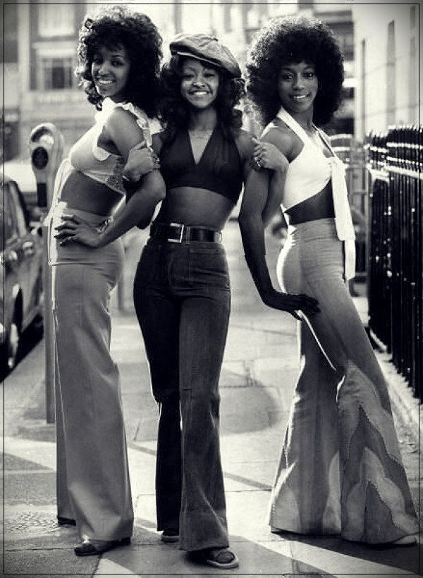
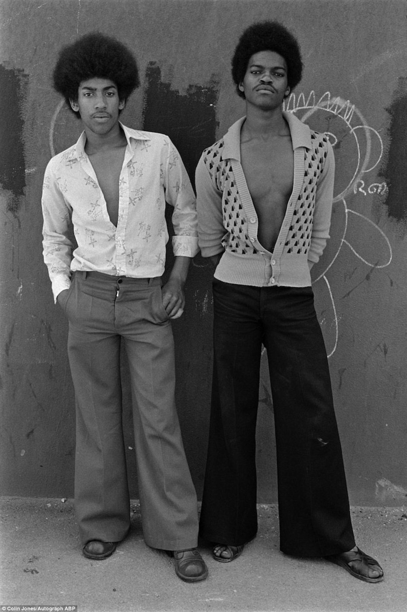
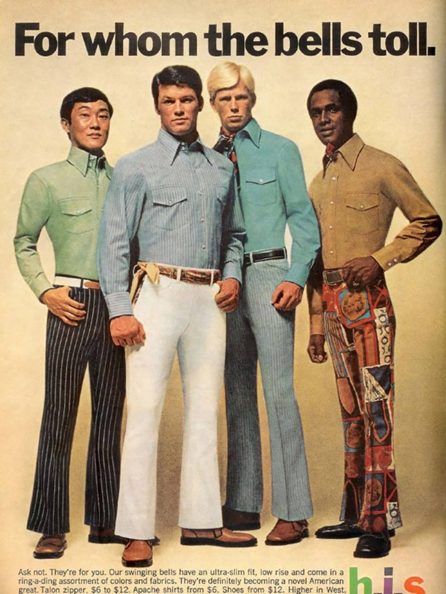
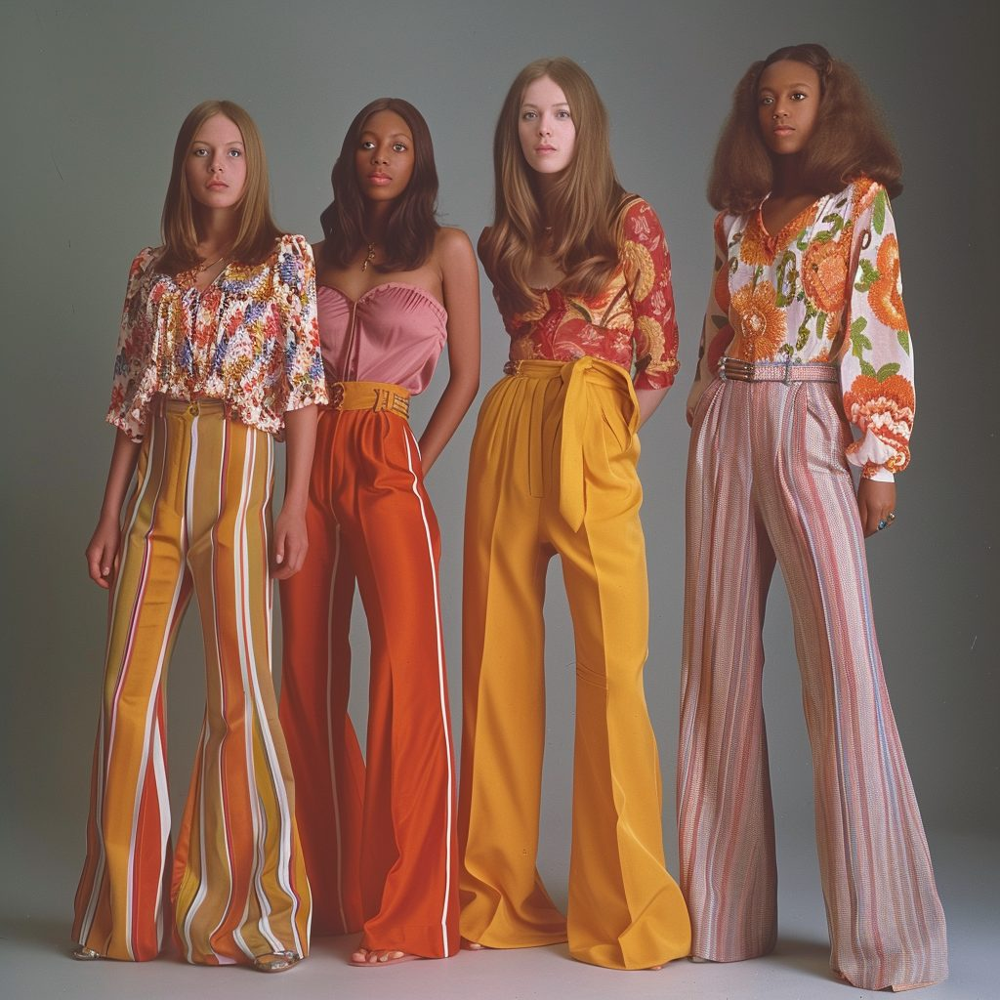

Women's style
Afros, bold prints, and confident silhouettes.
A vibrant era of expression, identity, and cultural pride.
The 1970s were a powerful decade for Americans, marked by self-expression, pride, and the rise of movements like Black Power, and by disco. Fashion became a statement of culture, politics, and freedom.

Afros, bold prints, and confident silhouettes.

Wide collars, flares, and statement suits.

Everyday looks captured in '70s photographs.

Earth tones, paisley, and platform shoes.